“Als Betriebssystem bezeichnet man die Software, die den Ablauf von Programmen auf der Hardware steuert und die vorhandenen Betriebsmittel verwaltet.”
Siehe dazu folgendes Schema:
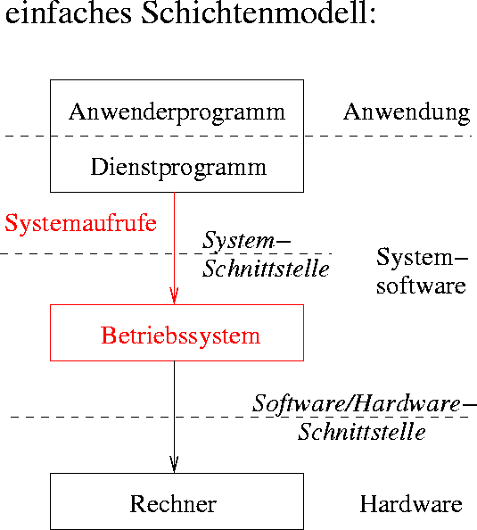 Abbildung 1: Einordnung des Betriebssystems in die Abstraktionsebenen eines Rechners
Anforderungen an ein Betriebssystem
hohe Zuverlässigkeit
hohe Benutzerfreundlichkeit
geringe Kosten
hohe Leistung
einfache Wartbarkeit
Betriebsarten von Betriebssystem
Klassifikation nach Art der Auftragsbearbeitung
Stapelverarbeitung
Interaktiver Betrieb
Echtzeitbetrieb
Weitere Möglichkeit der Klassifikation
Einbenutzer- / Mehrbenutzerbetrieb
Einprogramm- / Mehrprogrammbetrieb
Einprozessor- / Mehrprozessorbetrieb
Aufgaben eines Betriebssystems
Steuerung der Eingabe- / Ausgabe-Geräte (u.a. Treiber)
Bereitstellung eines Dateisystems
Benutzerschnittstelle
Verwaltung der Betriebsmittel bei Mehrprogrammbetrieb
Schutz der Anwenderprogramme bei Mehrprogrammbetrieb
Dienste eines Betriebssystems
Benutzerschnittstelle (Kommandozeile)
Programmausführung
Ein- und Ausgabeoperationen
Dateiverwaltung
Kommunikation (z.B. mit Ein- / Ausgabegeräten oder mit Speicher)
Fehlerbehandlung / Schutzmechanismen
Einblick in UNIX
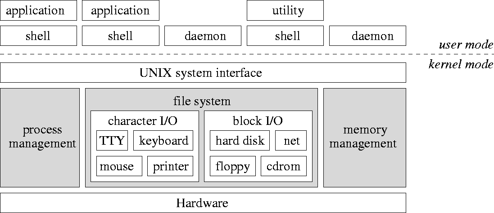 Abbildung 2: Komponenten von UNIX (oben: Benutzerschnittstelle, unten: System- und Hardwareschicht und Kernel)
System- und Benutzerprogramme werden auf gleicher Ebene als Prozesse ausgeführt, haben aber unterschiedliche Zugriffsrechte
Ein- / Ausgabegeräte werden logisch getrennt behandelt
Unterbrechungen (Interrupts)
Ziel: Direktes Reagieren auf Ereignisse wie Benutzereingaben durch Unterbrechung eines aktiven Prozesses, Parallelität von Ein- / Ausgabe und Programmausführung
Dazu wird der Zustand des Prozesses im Hauptspeicher zwischengespeichert und nach Beendigung der Unterbrechung wiederhergestellt.
Idee: Prozessor initialisiert Ein- / Ausgabe, sodass E/A-Werk ein Programm selbstständig ausführen kann
2 Arten der Unterbrechung:
externe Unterbrechung: E/A-Werk informiert den Prozessor über Zustand eines E/A-Geräts
interne Unterbrechung: Prozessor führt Ausnahmebehandlungen bei Fehlern durch (z.B. Division durch 0)
Ablauf einer Unterbrechung:
Unterbrechungen werden nur nach einer Instruktion behandelt
Instruktionen werden nicht unterbrochen
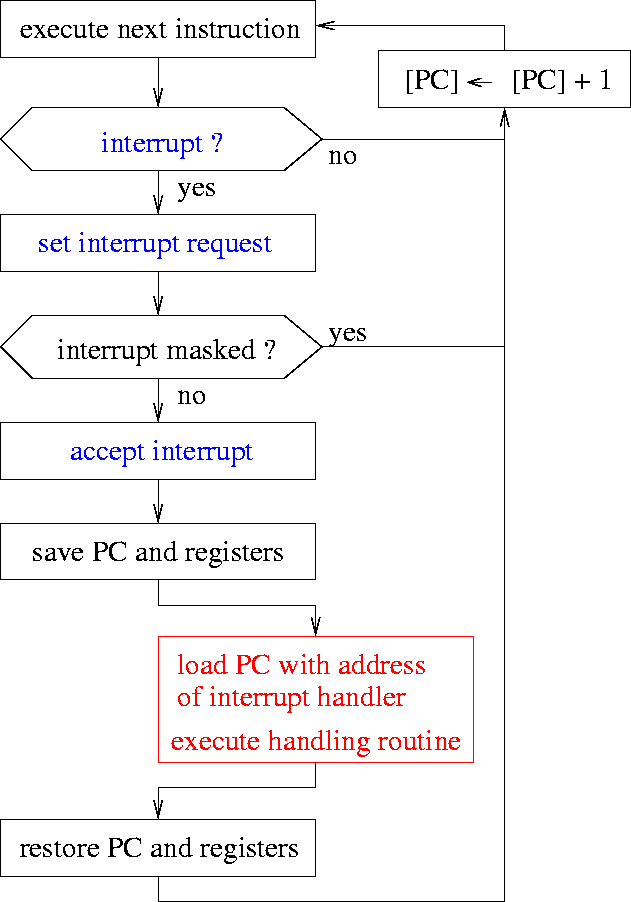 Abbildung 3: Durchführung einer Unterbrechungssequenz PC = Program Counter
Prozesse
Definition
“Ein Prozess ist ein Programm während der Ausführung im Arbeitsspeicher einschließlich seiner Umgebung.”
Umgebung eines Prozessors
Inhalt vom Programmzähler (PC)
Inhalt von Daten-, Adress- und Statusregistern
Daten im Speicher
Programmcode
Verhalten eines Prozesses
ein Prozess (= Eltern-Prozess) kann einen neuen Prozess erzeugen (= Kind-Prozess)
Prozesse können unterbrochen werden
auf einem Prozessor kann nur ein Prozess gleichzeitig ausgeführt werden
Zustände eines Prozesses
bereit (ready): Prozess ist ausführbar, Prozessor ist aber belegt
aktiv (running): Prozess wird auf Prozessor ausgeführt
blockiert (blocked): Prozess wartet auf ein externes Ereignis q
inaktiv (idle): Prozess wurde erzeugt oder ist terminiert.
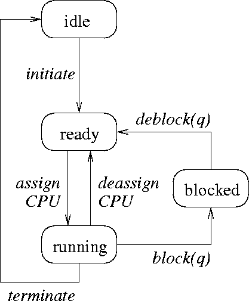 Abbildung 4: Zustandsübergänge eines Prozesses
Scheduler steuert die Übergänge assign/deassign und weist Prozesse damit der CPU zu
eigene Warteschlangen für ready und blocked
ready-Prozesse werden in der Reihenfolge ihrer Ankunft bearbeitet
blocked-Prozesse warten auf ein Ereignis, das sie wieder ans Ende der Bereit-Warteschlange stellt
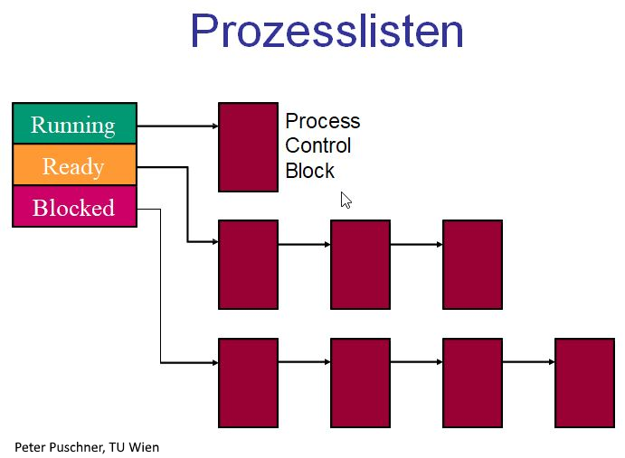 Abbildung 5: Prozesszustände und Warteschlangen
bei Prozesswechsel müssen die Registerinhalte des vorherigen Prozesses auf dem Stack gesichert werden
Prozessverwaltung
Prozessverwaltung: Komponente eines Betriebssystems, die für die Zuteilung von Betriebsmitteln an wartende Prozesse zuständig ist
alle für die Prozessverwaltung wichtigen Informationen sind im Prozessleitblock hinterlegt
die Leitblöcke aller Prozesse sind in einer Systemprozesstabelle angegeben
Steuerung von Prozessen
Der Scheduler entscheidet nach einer Strategie, welcher Prozess wann und wie lange ausgeführt werden darf.
verschiedene Strategien zur bestmöglichen Ausnutzung der CPU
non-preemptive (kooperative) Strategien: Prozess läuft so lange, bis er terminiert oder auf ein Ereignis wartet (blocked)
preemptive (verdrängende) Strategien: aktiver Prozess kann vom Scheduler aus der CPU gezogen und wieder in die Warteschlange eingeordnet werden
Moderne Betriebssysteme verwenden ausschließlich preemptive Strategien.
Non-preemptive Scheduling-Strategien
First Come, First Serve (FCFS)
Prozesse werden in der Reihenfolge ihrer Initiierung in die Warteschlange geordnet, diese wird nach dem FIFO-Prinzip (First In, First Out) bearbeitet.
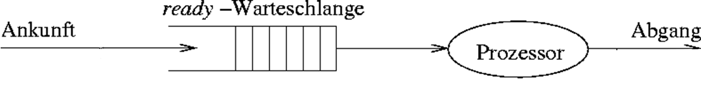 Abbildung 6: Scheduling-Strategie “First Come, First Serve”
Last Come, First Serve (LCFS)
Prozesse werden in der Reihenfolge ihrer Ankunft in die Warteschlange eingereiht, diese wird nach dem LIFO-Prinzip (Last In, First Out) bearbeitet, d.h. der zuletzt eingetroffene Prozess wird als erstes von der CPU behandelt.
Abbildung 6: Scheduling-Strategie “First Come, First Serve”
Shortest Job First (SJF)
Prozesse mit geringsten Bedienzeiten werden zuerst behandelt.
Ziel: Durchschnittliche Antwortzeit reduzieren
Prozesse können bei hohen Prozess-Aufkommen “verhungern”
Highest Response Ratio Next (HRRN)
Bevorzugt Prozesse mit höheren Antworzeit / Bedienzeit Verhältnissen
Priority Scheduling (PS)
jeder Prozess i hat eine Priorität p
Bereit-Warteschlange wird nach Priorität sortiert und nach FIFO-Prinzip bearbeitet.
Preemptive Scheduling-Strategien
Round Robin (RR)
Zeitscheibenverfahren mit erhaltener Prozessreihenfolge durch FCFS
jeder Prozess ist für eine festgelegte Zeit tslice aktiv und wird danach wieder ans Ende der Warteschlange angehängt
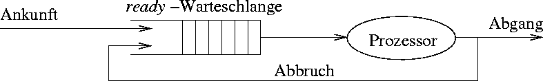 Abbildung 7: Scheduling-Strategie “Round Robin”
Dynamic Priority Round Robin (DPRR)
Round Robin mit priorisierter Warteschlange wie bei PS
Priorität wird bei jedem Durchgang erhöht
Shortest Remaining Time First (SRTF)
nach jeder Unterbrechung erhält der Prozess mit der niedrigsten verbleibenden Ausführungszeit die CPU
Problem: Restzeit ist oft schwer abzuschätzen
Prozess-Scheduling in UNIX
Round Robin kombiniert mit dynamischen Prioritäten
jede Priorität hat seine eigene Warteschlange und die höchsten Prioritäten werden zuerst bearbeitet
Thread → Zuweisung eines Kind-Prozesses zur CPU (Dispatching)
Ausführungszustand (running, ready, …)
Kontext
Stack
eigenes Prozessverwaltungssystem innerhalb des Prozesses
Multithreading: Innerhalb eines Prozesses werden mehrere Tätigkeiten parallel vorgenommen, setzt Fähigkeit des Betriebssystem zum Multithreading voraus.
Kommunikation zwischen Prozessen
Prozesse müssen ständig miteinander kommunizieren, z.B. für den Aufbau von Pipelines (Übergabe der Ausgabe des vorherigen Prozesses an den nächsten Prozess).
Möglichkeiten der Prozesskommunikation
Nutzung eines gemeinsamen Speicherbereiches
Kommunikation über Dateien im Dateisystem
expliziter Austausch von Nachrichten
Kommunikation über Pipes (UNIX-spezifisch)
Eine sichere Prozesskommunikation bedarf einer geeigneten Prozesssynchronisation, um den gegenseitigen Ausschluss umzusetzen.
Problem: mehrere Prozesse greifen gleichzeitig auf eine gemeinsame Ressource zu (z.B. Speichervariable)
Code-Abschnitte, die nicht unterbrochen werden dürfen, weil sie bspw. eine Transaktion tätigen, bezeichnet man als kritischen Abschnitt. Daher dürfen sich mehrere Prozesse nicht gleichzeitig in ihren kritischen Abschnitten befinden.
Bedingungen für den gegenseitigen Ausschluss (mutual exclusion)
Nur ein Prozess darf sich im kritischen Abschnitt befinden.
Prozesse, die in den kritischen Abschnitt eintreten oder diesen verlassen, müssen die anderen wartenden Prozesse über dieses Ereignis informieren.
Auch bei mehr als 2 Prozessen muss das Verfahren einwandfrei sein.
Jeder Prozess soll gleiche Chancen auf den Eintritt in einen kritischen Abschnitt haben.
Kein Prozess in einem kritischen Abschnitt darf andere blockieren.
Kein Prozess soll unendlich lange warten müssen.
Unterbrechungssperre
Idee: Unterbrechungen (Interrupts) werden bei Ausführungen eines kritischen Abschnitts ignoriert / maskiert. Selbst das Betriebssystem kann den laufenden Prozess nicht anhalten.
Vorteile
Nachteile
+ einfache Realisierung
- Anwender muss Maskierung wieder aufheben (kann leicht vergessen werden)
- hohe Reaktionszeit bei eintreffenden E/A-Unterbrechungsanforderungen können zu Datenverlust führen
- funktioniert nicht bei Mehrprozessorbetrieb
Verwendung eines Semaphors
Definition: Ein Semaphor (DIJKSTRA, 1965) ist eine Variable S, auf der die zwei folgenden ununterbrechenbaren Operationen P (Passieren) und V (Verlassen) definiert sind:
P(S):=[while(S <=0){/* do nothing */}; S = S -1;]V(S):=[ S = S +1;]
Initialisierung mit S = 1.
Implementation:
int S =1;// Zahl der verfügbaren BetriebsmittelP(S);// kritischer Abschnitt hierV(S);
Nachteil: rechenintensive Warteschleife in P(S) (busy wait loop)
effizientere Implementation mit S als Objekt mit den Attributen ctr (Wert des Semaphors) und list (Liste wartender Prozesse):
P(S):=[ S.ctr = S.ctr – 1;if(S.ctr <0){
put pid in S.list;sleep();}]V(S):=[ S.ctr = S.ctr +1;if(S.ctr <=0){
get pid from S.list;wakeUp(pid);}]
Systemaufruf sleep() blockiert Prozess pid und verbraucht so keine CPU-Zeit mehr, bis er durch wakeUp(pid) wieder reaktiviert wird.
Erzeuger- / Verbraucher-Problem
Erzeuger-Prozess (producer) erzeugt Daten und schreibt sie in einen Puffer mit N Speicherplätzen
Verbraucher-Prozess (consumer) liest Daten aus Puffer mit unterschiedlicher Geschwindigkeit
1. Idee: Realisierung eines gegenseitigen Ausschlusses mit Semaphor mutex = 1 → unsicher, da Deadlocks auftreten können
2. Idee: Verwendung weiteres Semaphors für
die Anzahl belegter Speicherplätze used
die Anzahl freier Speicherplätze free
Bewertung des Semaphor-Konzepts
Vorteile
Nachteile
+ mächtiges Konzept
- teils schwierige Suche nach korrekter Lösung
+ flexibel
- Verklemmungen zwischen Prozessen ist möglich
+ vielseitig
- unübersichtlich (P und V im Code verstreut)
+ einfache Realisierung
- leichte Programmierfehler durch Vertauschungen
ein Monitor ist ein abstrakter Datentyp, mit dem eine Synchronisation von Prozessen auf höherer Ebene stattfinden kann
Kommunikation mittels Nachrichten
2 Kommunikationsroutinen:
send(destination, message): Senden einer Nachricht message an den Empfänger destination
message = receive(source): Empfangen einer Nachricht vom Sender source
Empfänger-Prozess blockiert, falls er keine Nachricht empfängt, und wartet auf eine Nachricht. Sender und Empfänger können sich auf demselben Rechner oder auf getrennten Rechnern befinden.
Der Nachrichtenkanal wird als unsicher angesehen:
Empfänger bestätigt Empfang einer Nachricht.
Falls Sender nach einer vorgegebenen Zeitspanne keine Empfangsbestätigung erhält, wiederholt er das Senden der Nachricht.
Empfänger muss nun die wiederholte Nachricht empfangen, da auch die Bestätigung verlorengehen kann.
Verschiedene Arbeitsweisen:
synchrones Senden einer Nachricht blockiert den Sender, bis eine Bestätigung eintrifft
asynchrones Senden einer Nachricht blockiert den Sender nicht, d.h. Sender arbeitet normal weiter
Betriebssystem puffert gesendete Nachrichten, die noch nicht empfangen wurden
Verklemmungen (Deadlocks)
jede Situation, in der Prozesse exklusiv auf Ressourcen (Variablen) zugreifen, kann eine Verklemmung auslösen
Für das Auftreten einer Verklemmung müssen 4 Bedingungen erfüllt sein:
Exklusive Nutzung (Mutual Exclusion)
Wartebedingung (Hold & Wait)
Nichtentziehbarkeit (Non-Preemption)
Geschlossene Kette (Circular Wait)
Speicherverwaltung
Zu bewältigende Aufgaben
Bereitstellung von Adressräumen
Verwaltung des Hauptspeichers als Betriebsmittel
Schutz vor unerlaubten Zugriffen
Organisation der Nutzung eines gemeinsamen Speicherbereiches
Die Speicherverwaltung ist die Komponente, die Prozessen einen Bereich im Hauptspeicher (Kachel) zuweist. Der Arbeitsspeicher eines Systems aus S Worten wird eingeteilt in KS Seiten aus jeweils K=2k Worten (typisch 4 Kbyte). Das Betriebssystem wird beim Startvorgang durch das BIOS (Basic Input Output System) in die ersten Kacheln des Hauptspeichers geladen. Die Anwendungsprogramme finden in den übrigen Kacheln Platz.
Speicherpartitionierung und Fragmentierung
Ein Anwendungsprogramm benötigt einen zusammenhängenden Speicherbereich (u.U. eine Partition benachbarter Seiten). Durch die Speicherverwaltung werden nur ganze Seiten vergeben, was zu interner Fragmentierung führen kann (siehe Abbildung 9).
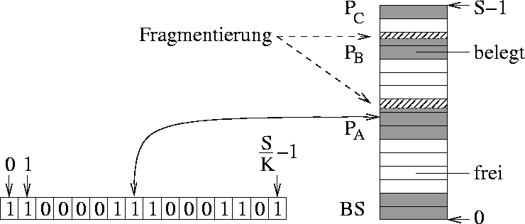 Abbildung 9: Beispiel einer internen Fragmentierung
2 Arten der Speicheraufteilung:
feste Partitionen: Speicher ist unterteilt in mehrere Partitionen fester Größe, jeder neue Prozess bekommt die kleinste ausreichende Partition zugewiesen
Problem: große Partitionen bleiben ungenutzt oder sind durch kleine Prozesse belegt
variable Partitionen: dynamisch variierende Anzahl und Größe der Partitionen
Problem: Ersetzung von Partitionen lässt viele kleine freie Speicherbereiche entstehen (→externe Fragmentierung) und größere Prozesse können nicht mehr eingeordnet werden
Prozesseinordnungsalgorithmen
Ziel: Minimierung des Verschnitts, damit nicht mehr so viele kleine freie Bereiche entstehen
Da die Suche nach einer freien Partition über die Belegungstabelle sehr aufwendig ist, bedient man sich einer verketteten Freiliste, die alle freien Partitionen beinhaltet und das Zusammenführen benachbarter freier Bereiche zulässt.
Folgende Algorithmen suchen nach dem geringstmöglichen Verschnitt:
First fit
Durchsuchen der Freiliste von Anfang an
Auswahl des ersten gefundenen Bereichs, der groß genug ist
Best fit
Durchsuchen der Freiliste von Anfang an
Auswahl des Bereichs mit der kleinsten ausreichenden Lücke
Buddy system
dynamische Auswahl mithilfe mehrerer Freilisten abhängig von Seitengröße 2k und Blockgröße 2s
Swapping
Falls der Arbeitsspeicher als Einlagerungsressource für Prozesse nicht ausreicht, fängt das Betriebssystem an, ganze Prozesse auf die Festplatte auszulagern. Dies kostet viel Zeit und die Prozesse auf dem Massenspeicher verlangsamen sich bei einer Transferrate von ≤10MB/s. Swapping ist sehr ineffizient, da immer ganze Prozesse aus- und eingelagert werden müssen. Außerdem bietet sich eine Speichergefährdung bei fehlerhafter Adressierung nach Relokation eines Prozesses, wodurch dieser die Daten anderer Prozesse manipulieren könnte.
Der Adressraum
Begriff: Der Begriff Adressraum beschreibt die Menge an erreichbaren Adressen in einem bestimmten Speicher. Sie wird durch die Rechnerarchitektur vorgegeben.
Physischer Adressraum: ein durch Adressleitungen gebildeter Adressraum, referenziert den physikalischen Hauptspeicher, bildet die Prozessoradressen auf die Speicherbausteine und die E/A-Ports ab
Virtueller (logischer) Adressraum: Adressraum für Prozesse, Umrechung der virtuellen Adressen in physikalische Adressen durch Memory Management Unit (MMU) (siehe Abbildung 10)
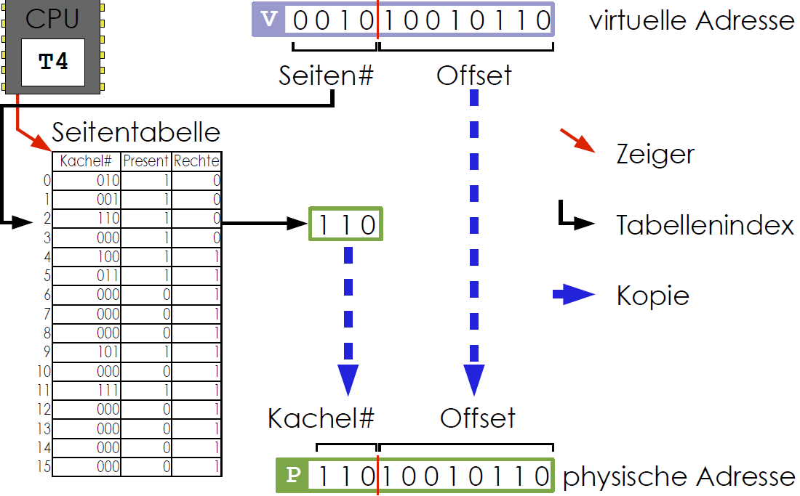 Abbildung 10: Konvertierung einer virtuellen in eine physikalische Adresse
Virtueller Speicher
Grundidee: Zuordnung von Speicherobjekten (Prozessdaten) zu Regionen von Adressräumen (siehe Abbildung 11)
strikte Trennung von virtuellem und physikalischem Speicher
hardwarebasierte Abbildung von virtuellen auf physikalische Adressen
virtueller Adressraum ist in Seiten (pages) und physikalischer Speicher in gleich große Kacheln (frames) aufgeteilt
Zuordnung von Seiten zu Kacheln durch Seitenverzeichnis
Seiten im virtuellen zusammenhängenden Adressraum werden auf nicht zusammenhängende Kacheln des physikalischen Speichers abgebildet
Seitenfehler bei unberechtigtem Zugriff auf Kachel oder wenn Seite keine Kachel zugeordnet wurde
jeder Prozess besitzt eine eigene Seitentabelle, die für jede Seite die Adresse der zugeordneten Kachel festhält
Ziel: jedem Prozess wird ein vom Hauptspeicher unabhängiger logischer Adressraum bereitgestellt
Betriebssystem kümmert sich um
Seitenfehler
Verwaltung des Hauptspeichers
Aufbau der Adressraumstruktur
Bereitstellung spezifischer Speicherobjekte
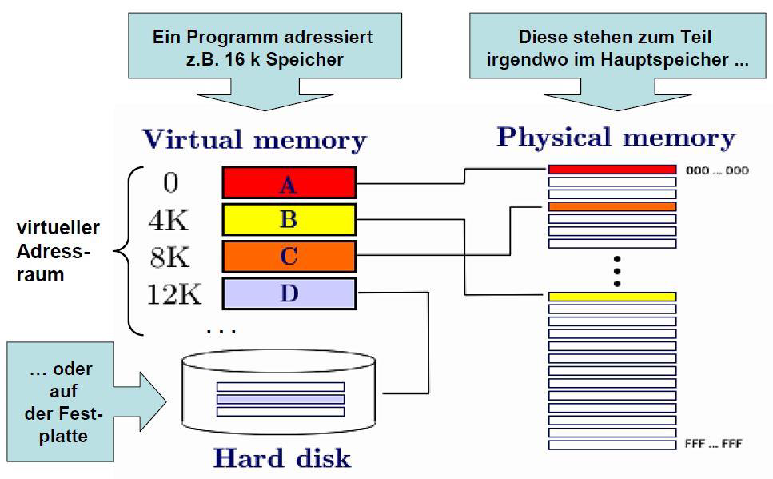 Abbildung 11: Anordnung des virtuellen Speichers
Adressabbildung
höherwertige Bits der virtuellen Adresse (rot) geben Seitennummer in Seitentabelle an
niedrigwertigere Bits der virtuellen Adresse (grün) bilden den sogenannten Offset (Wortadresse in Kachel) (siehe Abbildung 12)
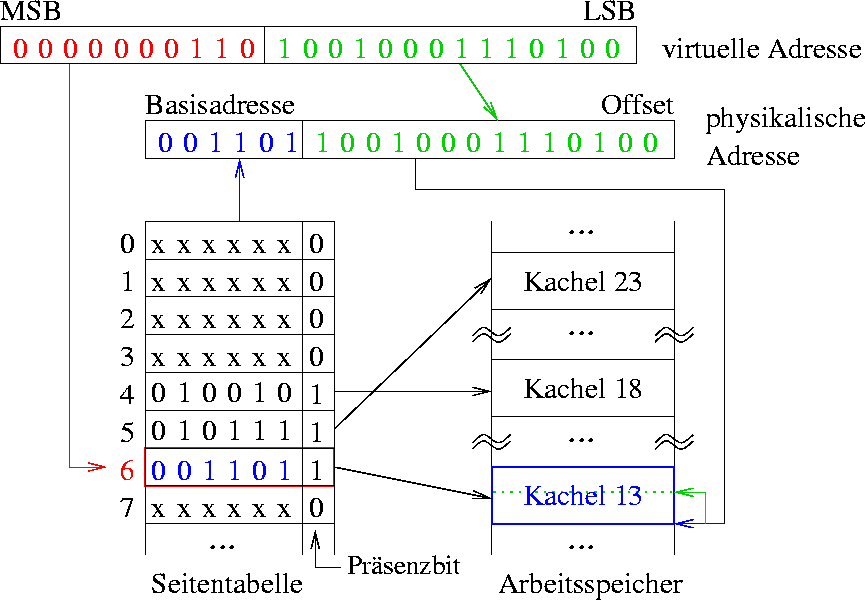 Abbildung 12: Kodierung der virtuellen Adresse
Präsenzbit p gibt an, ob die Seite in den Hauptspeicher geladen wurde oder nicht.
Seitentabelle kann noch Referenzbit R, Modifikationsbit M (gibt an, ob die Seite im Hauptspeicher verändert wurde) und Zugriffsbits (Berechtigungen) enthalten
Die Seitentabelle
Ein Seitentabelleneintrag kann folgendermaßen aussehen:
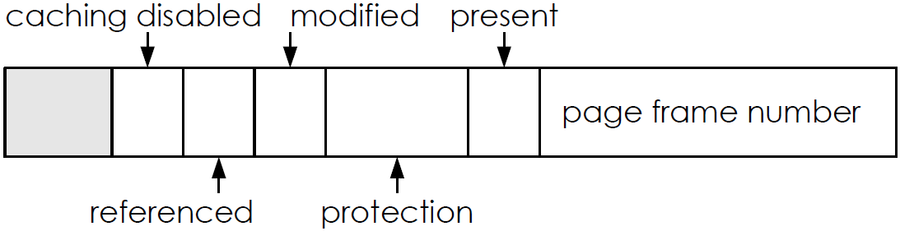 Abbildung 13: Beispiel eines Seitentabelleneintrages
Seitentabellenattribute:
present: Seite befindet sich im Hauptspeicher
modified: schreibender Zugriff ist erfolgt (“dirty”)
used: irgendein Zugriff ist erfolgt
caching: ein/aus (z.B. wegen E/A)
protection: erlaubte Art von Zugriffen in Abhängigkeit von CPU-Modus
Seitenwechselstrategien
Einlagerungsstrategien:
Pre-paging
vorgeplante Einlagerung einer Seite, bevor sie von Programm adressiert wird
Demand-paging
Seiten werden nur durch Unterbrechungen nach Seitenfehlern geladen
Auslagerungsstrategien:
Random
Es wird eine zufällige Seite ausgelagert
First in, First out (FIFO)
Es wird stets die Seite, die als erstes hinzugefügt wurde, ausgelagert
Least Recently Used (LRU)
Es wird die Seite ausgelagert, die am längsten nicht mehr benutzt wurde (UNIX)
Least Frequently Used (LFU)
Es wird die Seite ausgelagert, die am seltensten benutzt wurde
Optimal Replacement
Es wird die Seite ausgelagert, die am spätesten in der Zukunft wiederverwendet wird.
Bewertung des virtuellen Speichers
Vorteile
Nachteile
+ geringe E/A-Belastung
- hoher Speicherbedarf für Seitentabellen
+ automatischer Speicherschutz: jeder Prozess kann nur auf seine eigenen Seiten zugreifen
- hoher Implementierungsaufwand
+ beliebig große Prozesse ausführbar
- hoher CPU-Bedarf für Seitenverwaltung, falls keine Hardware-Unterstützung
+ keine externe Fragmentierung
+ dynamischer Speicherplatz
Größe der Seitentabelle oder Geschwindigkeit der Abbildung können zum Problem werden
Dateien und Dateisysteme
Problem: Größe vom Hauptspeicher ist begrenzt, Daten gehen verloren, sobald der Prozess beendet wird
Lösung: Sicherung der Daten auf dem permanenten Massenspeicher mit großer Kapazität
Betriebssystem muss bei Dateien auf dem Massenspeicher darauf achten, dass
ein effizienter und schneller Zugriff gewährleistet ist und
andere Benutzer nicht auf meine Dateien zugreifen können (Zugriffsberechtigungen).
Massenspeicher / Hintergrundspeicher
physikalisches Medium mit Blockstruktur
4 oder 8 Blöcke bilden ein Cluster (siehe Abbildung 14)
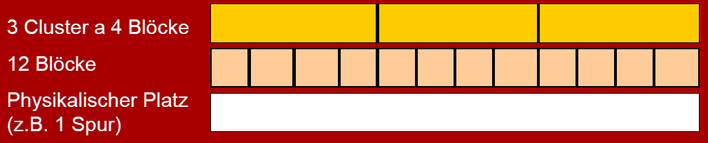 Abbildung 14: Clustering des Hintergrundspeichers
Datei-Konzept
Datei: Eine mit Namen versehene Sammlung zusammengehöriger Informationen
verschiedene Dateitypen (Textdatei, Quelltext, Bitmap, Binärdatei, Programmdatei, …)
Dateiattribute
Dateiname
Datei-Identifikator
Typinformationen, Format
Metadaten (Tabelle mit Informationen zur Datei)
Datei-Operationen
Erzeugen
Schreiben
Lesen
Löschen
Umbenennen
Kopieren
Anhängen
Operationen erfordern das Auffinden einer Datei in einem Verzeichnis (Open File Table (OFT) enthält eine Liste aller offenen Dateien)
Zugriffsarten
Sequenzieller Zugriff
Direkter Zugriff (Direct Access)
Verzeichniskonzept
Alle Dateien in einem Dateisystem werden durch optionale Partitionen auf der Festplatte und durch Verzeichnisse organisiert (siehe Abbildung 15).
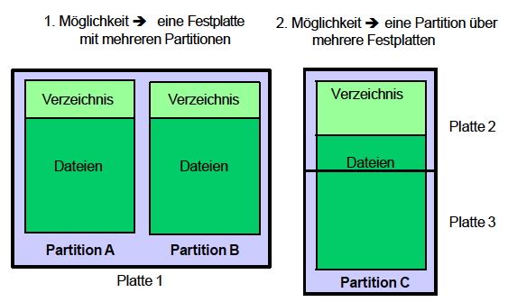 Abbildung 15: Organisation von Dateien auf Festplatten
Verzeichnisse bilden eine Struktur auf der Festplatte, unter der Dateien gespeichert werden können. In Verzeichnissen kann man
nach einer Datei suchen
eine Datei anlegen
eine Datei löschen
eine Datei umbenennen
Dateien auflisten
Verschiedene Varianten von Verzeichnissen
Single-Level-Verzeichnis: Alle Dateien in einem Verzeichnis
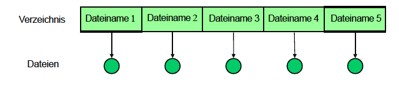 Abbildung 16: Single-Level-Verzeichnis
Two-Level-Verzeichnis: Struktur mit zwei Ebenen, wobei jeder Benutzer sein eigenes Verzeichnis hat
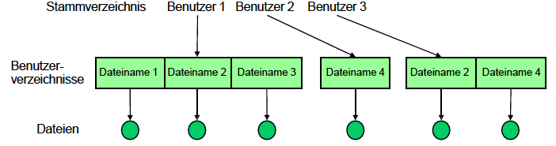 Abbildung 17: Two-Level-Verzeichnis
Baum-Verzeichnisstruktur: Struktur mit Verzeichnissen und beliebig vielen Unterverzeichnissen, Datei wird über absoluten Pfad vom Wurzelverzeichnis (unter UNIX /) identifiziert
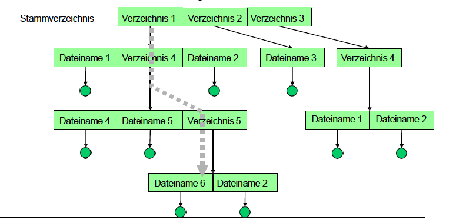 Abbildung 18: Baum-Verzeichnisstruktur
Operationen auf Dateisystemen
Dateien oder Verzeichnisse können über Links an mehreren Stellen referenziert werden (→ azyklische Graphen / Referenzierung)
andere Dateisysteme können in das Aktuelle an einen bestimmten Punkt eingehängt werden (mount)
Implementierung auf Festplatten
Dateien werden magnetisch gespeichert
Festplatte besteht aus
Scheiben und Schreib- / Leseköpfen (beidseitig)
Scheiben bestehen aus Spuren (Tracks)
Spuren sind in Sektoren aufgeteilt (siehe Abbildung 19)
Scheiben werden durch spindle rotiert
um den Durchsatz zu erhöhen, werden Daten blockweise übertragen (Block = mehrere Sektoren)
Zugriffe werden durch Gerätecontroller (disk controller) gesteuert
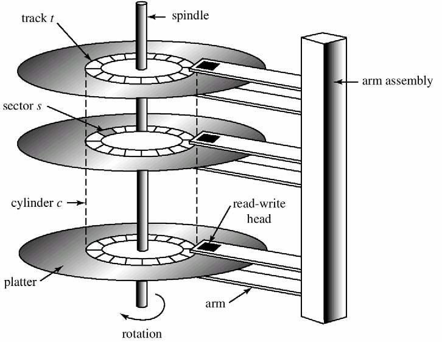 Abbildung 19: Aufbau einer Festplatte
Implementierung von Dateisystemen
Dateisysteme sind in Schichten realisiert:
E/A-Kontrolle: Treiber für Datenübertragung
Basic File System: veranlasst Treiber, physikalische Blöcke auf Festplatte zu schreiben bzw. von dort zu lesen
Dateiorganisationsmodul: Abbildung von logischen zu physikalischen Blockadressen
Logisches Dateisystem: Neueintragung / Löschung von Dateien sowie E/A-Zugriffe auf eine Datei
Schichten
Anwendungsprogramme
logisches Dateisystem
Dateiorganisationsmodul
Basic-File-System
E/A-Kontrolle
Hardware
Abbildung 20: Segmente einer Festplatte
Master Boot Record (MBR) liegt immer im ersten Segment der Festplatte (Sektor 0)
enthält die Anfangs- und Endadressen jeder Partition
Beim Boot-Vorgang wird der MBR vom BIOS (Basic Input Output System) ausgeführt
Superblock (oder Volume Control Block)
enthält wichtige Parameter des Dateisystems
Allokationsstrategien vom Dateisystem
Ein Dateisystem kann zwischen verschiedenen Möglichkeiten wählen, Blöcke von Daten wie Dateien auf die Festplatte zu schreiben:
zusammenhängende Belegung
verkettete Belegung
Belegung durch verkettete Listen mit einer Tabelle im Arbeitsspeicher (→indizierte Allokation)
Bestätigung der Datenannahme als auch aller Steuersignale
Abbildung 28: Fully-Interlocked Datenübertragung
Direct Memory Access (DMA)
Um die CPU nicht mit trivialen Aufgaben wie der Weiterleitung von langen Datenströmen an Ausgabebausteine zu belasten, wird ein zusätzlicher DMA-Baustein benutzt, der nach einer Initialisierung durch die CPU den Speichertransfer eigenmächtig durchführt. Damit werden häufige Aufgaben wie das Inkrementieren von Adressen, Zählen von Datenwörtern oder Abfragen des Status der E/A-Bausteine ausgelagert.
Ein DMA-Baustein besteht aus folgenden Komponenten:
ein Quelladress- und Zieladressregister
ein Zählregister
ein Kontrollregister für Statusinformationen
Ein System mit DMA-Baustein kann folgendermaßen aussehen
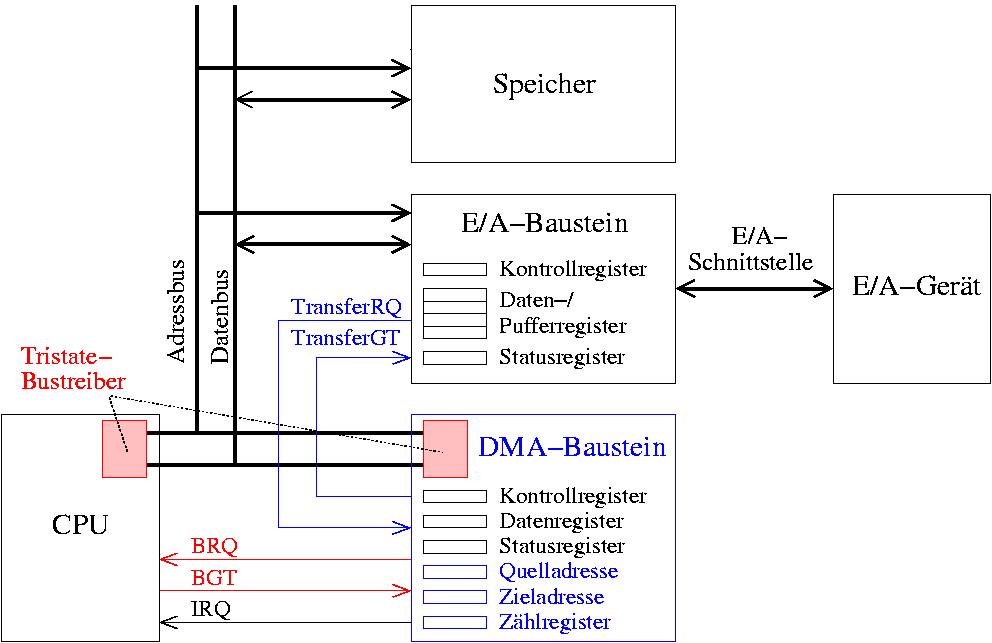 Abbildung 29: Architektur eines Systems mit DMA-Baustein
Ablauf eines DMA-Transfers
Abbildung 30: Ablauf eines DMA-Transfers TransferRQ = Transfer Request BRQ = Bus Request BGT = Bus Grant
E/A-Scheduling-Strategien
First In, First Out (FIFO)
Bearbeitung der Auftragsliste nach Reihenfolge der Ankunft
d.h. Folge von Spurnummern: 98,183,37,122,14,124,65,67
Gesamtzahl der Spurwechsel: 640
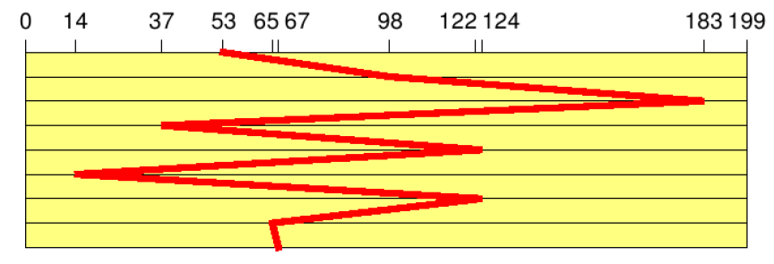 Abbildung 31: Spurenwechsel bei FIFO-Prinzip
Shortest Seek Time First (SSTF)
Der Auftrag mit der niedrigsten Positionierungszeit wird bevorzugt
d.h. Folge von Spurnummern 98,183,37,122,14,124,65,67
Gesamtzahl der Spurwechsel: 236
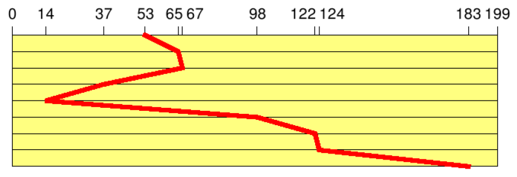 Abbildung 32: Spurenwechsel bei SSTF-Prinzip
Elevator (SCAN)
Bewegung des Plattenarms in eine Richtung, bis keine Aufträge mehr vorhanden sind (Fahrstuhlstrategie)
d.h. Folge von Spurnummern: 98,183,37,122,14,124,65,67
Gesamtzahl der Spurwechsel: 208
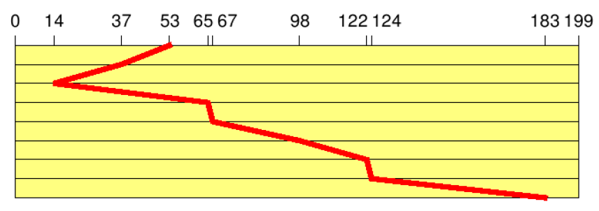 Abbildung 33: Spurenwechsel bei Elevator-Prinzip
Circular Scanning (C-SCAN)
funktioniert ähnlich wie Elevator
arbeitet sich zum nächstgelegenen Ende der Platte vor
springt ans andere Ende der Platte
bearbeitet die nächstgelegenen Blöcke in der gleichen Richtung
Gesamtzahl der Spurwechsel: 187
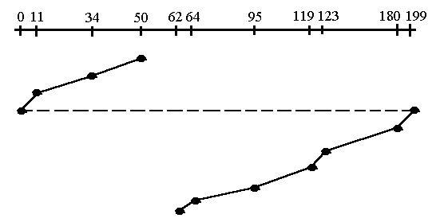 Abbildung 34: Spurenwechsel bei C-SCAN-Prinzip
Circular Looking (C-LOOK)
ähnlich wie C-SCAN
einziger Unterschied zu C-SCAN ist, dass C-LOOK nicht ganz bis ans Ende der Spur fortschreitet, sondern direkt vom letzten zum ersten Block am anderen Ende springt
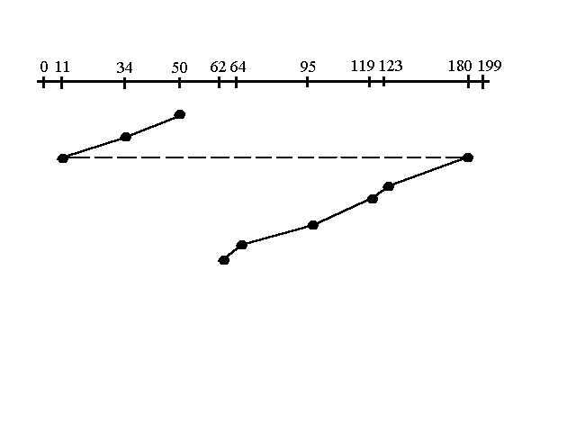 Abbildung 35: Spurenwechsel bei C-LOOK-Prinzip